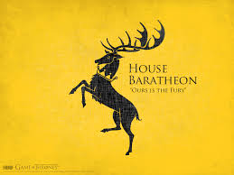

House Stark of Winterfell is a Great House of Westeros, ruling over the vast region known as the North from their seat in Winterfell. It is one of the oldest lines of Westerosi nobility by far, claiming a line of descent stretching back over eight thousand years. Before the Targaryen conquest, as well as during the War of the Five Kings and Daenerys Targaryen's invasion of Westeros, the leaders of House Stark ruled over the region as the Kings in the North.
House Stark's sigil is a grey direwolf on a white background, over a green escutcheon. They are one of the few noble Houses whose family motto is not a boast or threat. Instead, the House Stark family motto is a warning, one that, no matter the circumstances, will always be relevant: "Winter Is Coming."
House Targaryen is a Great House of Westeros and was the ruling royal House of the Seven Kingdoms for three centuries since it conquered and unified the realm, before it was deposed during Robert's Rebellion and House Baratheon replaced it as the new royal House. The few surviving Targaryens fled into exile to the Free Cities of Essos across the Narrow Sea. Currently based on Dragonstone off of the eastern coast of Westeros, House Targaryen seeks to retake the Seven Kingdoms from House Lannister, who formally replaced House Baratheon as the royal House following the destruction of the Great Sept of Baelor.
House Targaryen's sigil is a three-headed red dragon on a black background, and their house words are "Fire and Blood."

House Baratheon of Storm's End is a legally extinct Great House of Westeros. A cadet branch was formerly the royal house, but House Lannister now controls the throne. House Baratheon traditionally ruled the Stormlands on the eastern coast of Westeros, aptly named for its frequent storms, from their seat of Storm's End.
House Baratheon became the royal house of the Seven Kingdoms after Robert Baratheon led a rebellion against the Targaryen dynasty. At the end of the rebellion, Robert ascended the Iron Throne as Robert I and married Cersei Lannister after the death of Lyanna Stark.
House Baratheon's sigil is a black stag on a gold background and their house words are "Ours Is the Fury." When Robert ascended to the Iron Throne, a gold crown was added to the stag, denoting their status as the royal house.
House Lannister of Casterly Rock is one of the Great Houses of Westeros, one of its richest and most powerful families and oldest dynasties. It is also the current royal house of the Seven Kingdoms following the extinction of House Baratheon of King's Landing, which had been their puppet house anyway.
The Lannisters rule over the Westerlands. Their seat is Casterly Rock, a massive rocky promontory overlooking the Sunset Sea which has had habitations and fortifications built into it over the millennia. They are the Lords Paramount of the Westerlands and Wardens of the West. As the new royal house, they also rule directly over the Crownlands from their seat of the Red Keep in King's Landing, the traditional seat of the royal family. House Lannister's Heraldry consists of a golden lion on a crimson background, and their House words are "Hear me roar!", which is rarely mentioned. Their unofficial motto, which is as well known as the official one, is "A Lannister always pays his debts" - which is used much more often and mostly in negative context, though it can also be used in the original, literal sense.
House Tyrell of Highgarden is an extinct Great House of Westeros. It ruled over the Reach, a vast, fertile, and heavily-populated region of southwestern Westeros, from their castle-seat of Highgarden as Lords Paramount of the Reach and Wardens of the South after taking control of the region from House Gardener during the Targaryen conquest.
The Tyrell sigil is a golden rose on a pale green field. Their house words are "Growing Strong."
House Greyjoy of Pyke is one of the Great Houses of Westeros. It rules over the Iron Islands, a harsh and bleak collection of forbidding islands off the west coast of Westeros, from the Seastone Chair in the castle of Pyke on the island of the same name. The head of the family is traditionally known as the Lord Reaper of Pyke. Their sigil is a golden kraken on a black field, and their house motto is "We Do Not Sow." Members of the family tend to be attractive and well-built, with black hair.
House Martell of Sunspear is a legally extinct Great House of Westeros. It ruled the peninsula of Dorne in the far south of the continent from their castle Sunspear. Though loyal to the Iron Throne, the Martells were never conquered by the Targaryens and pursued a more isolated role in wider political events since Robert's Rebellion.
House Martell's sigil is a red sun pierced by a golden spear, on an orange field, a combination of the original Martell sigil - a yellow spear - and the emblem of Princess Nymeria - a red sun - to symbolize the marriage of the warrior-queen to Mors Martell. Their house words are "Unbowed, Unbent, Unbroken."
House Mormont of Bear Island is an old, proud, and honorable house of the north,[1] one of the principal families sworn to House Stark.[2] Their seat is at Bear Island, located in the Bay of Ice far to the north-west of Winterfell. Their blazon is a black bear over a green wood[3][4] and their motto is "Here We Stand".[5]
House Mormont is one of the few houses to have an ancestral weapon of Valyrian steel: a bastard sword called Longclaw. However, due to Bear Island's lack of valuable resources, the Mormonts are a rather poor house. Their hall is made of huge logs, surrounded by an earthen palisade. On the gate is a carving of a woman in a bearskin with a child in one arm suckling at her breast and a battleaxe in the other. Like the other women of Bear Island, the women of House Mormont learn how to defend themselves from ironmen and wildlings.
House Arryn of the Eyrie is one of the Great Houses of Westeros. It has ruled over the Vale of Arryn for millennia, originally as the Kings of Mountain and Vale and more recently as Lords Paramount of the Vale and Wardens of the East under the Targaryen kings and Baratheon-Lannister kings. The nominal head of House Arryn is Robin Arryn, the Lord of the Eyrie, with his stepfather Petyr Baelish acting as Lord Protector until he reaches the age of majority.